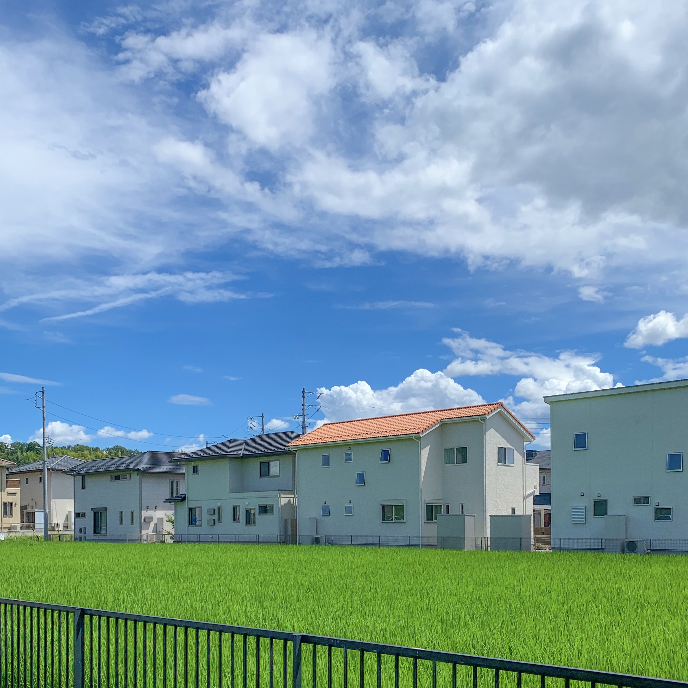
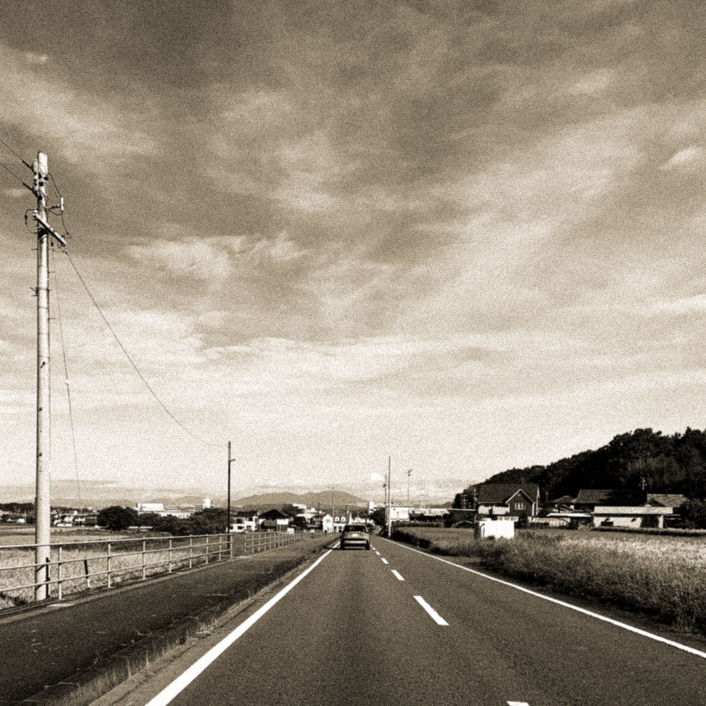
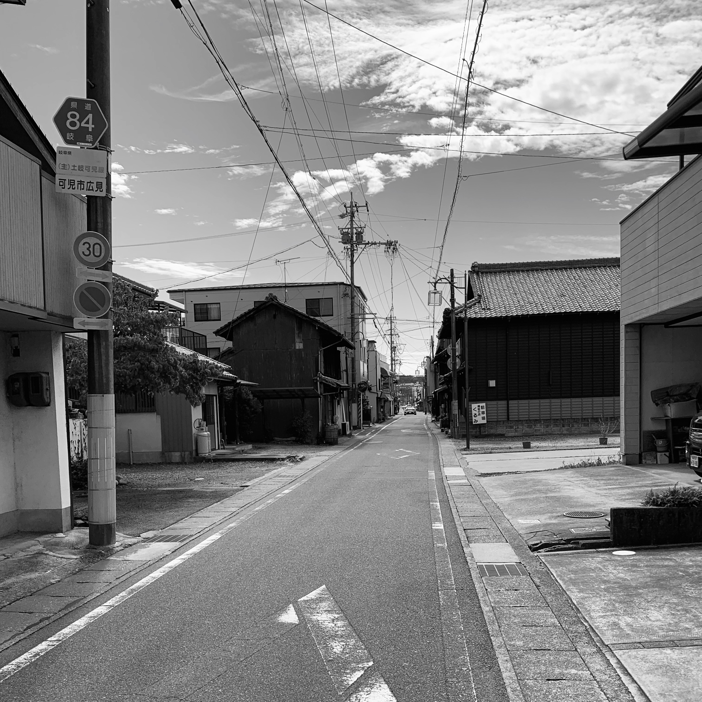
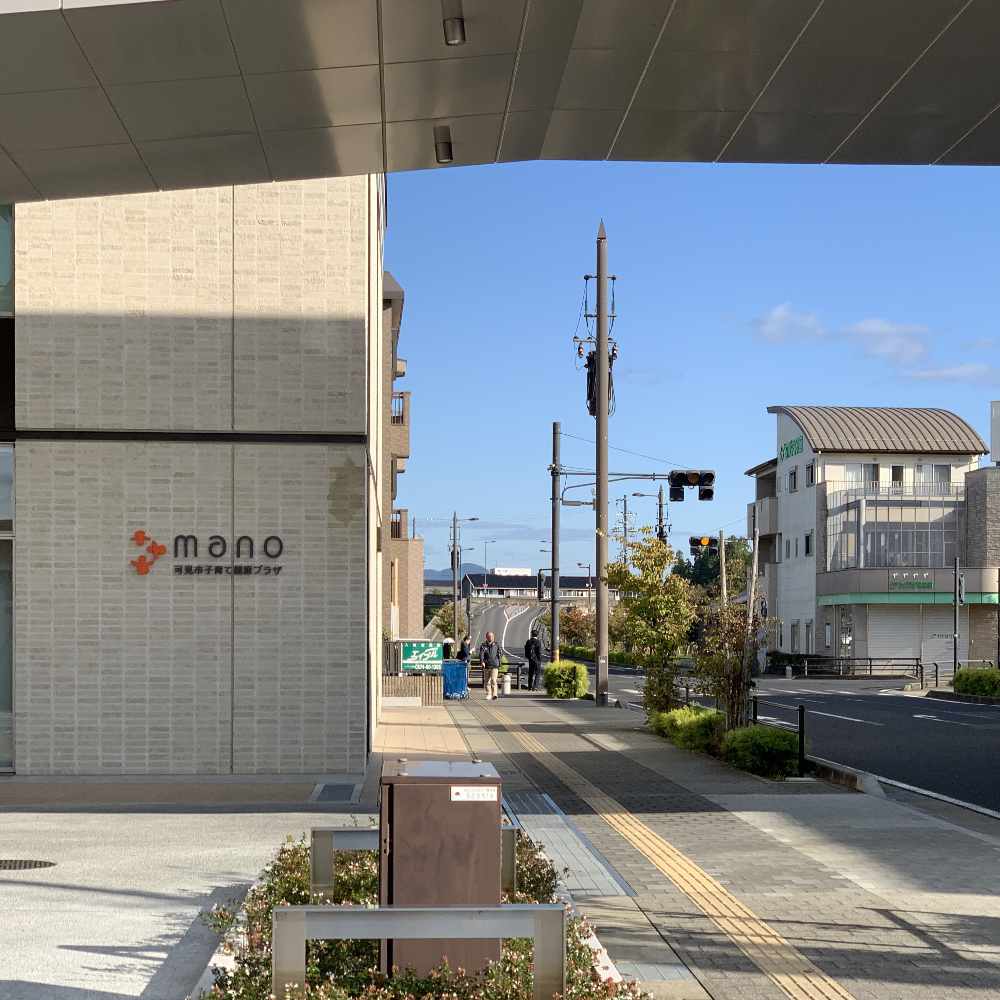
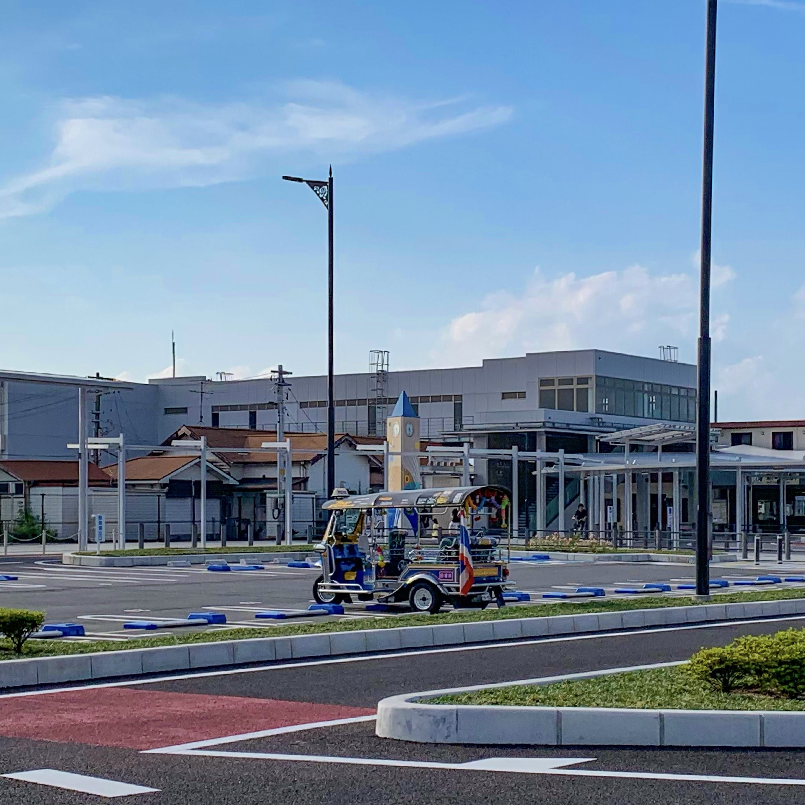
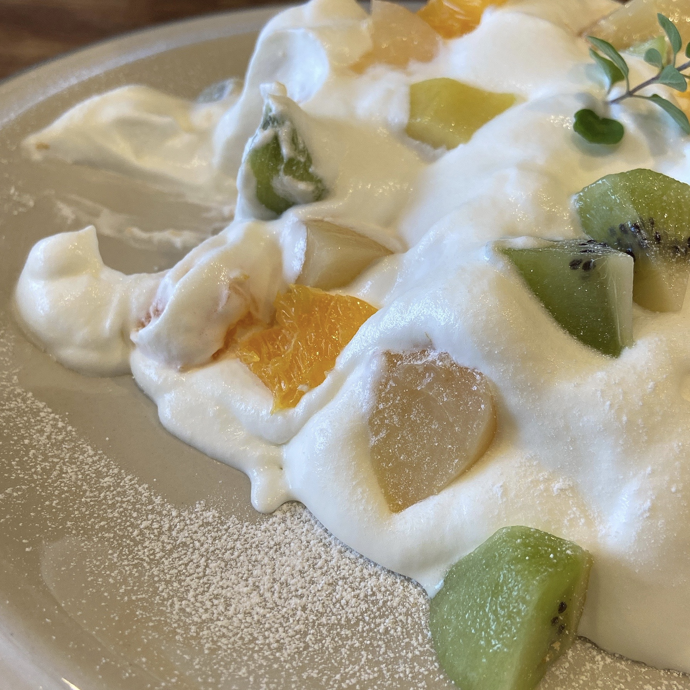
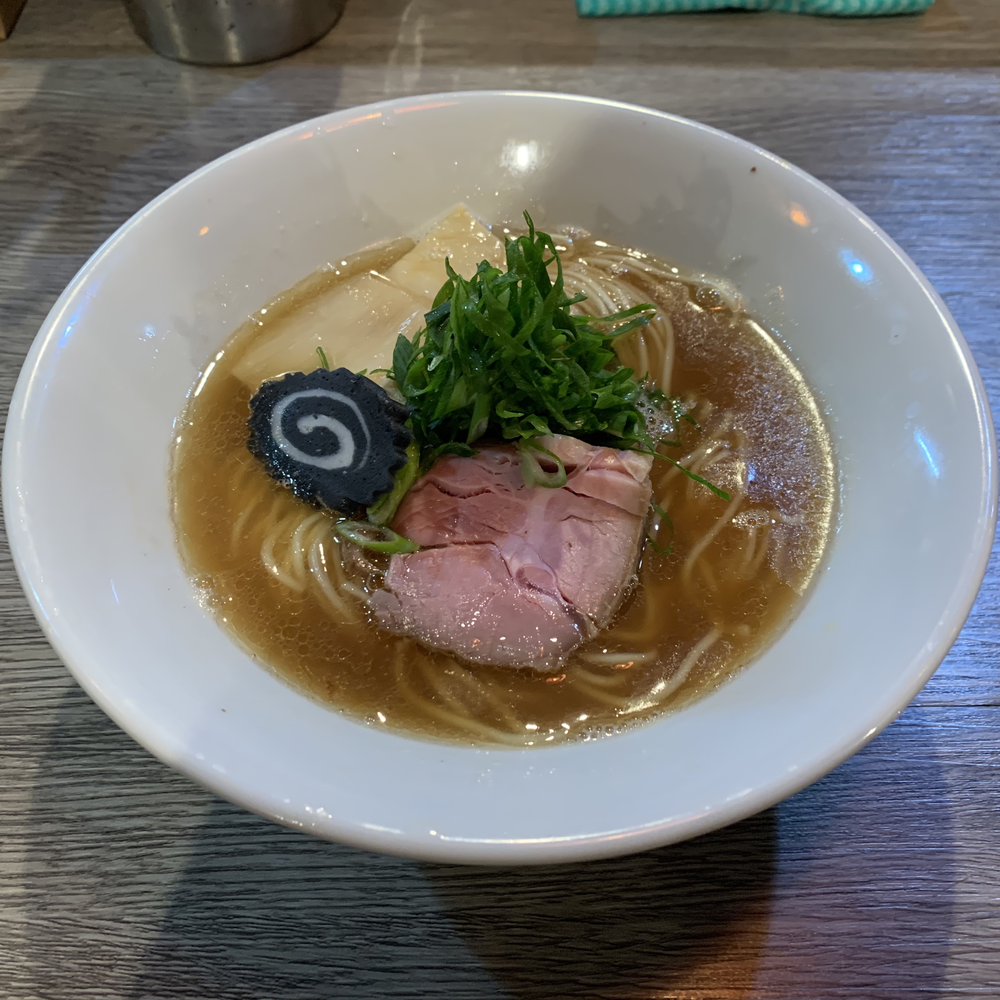
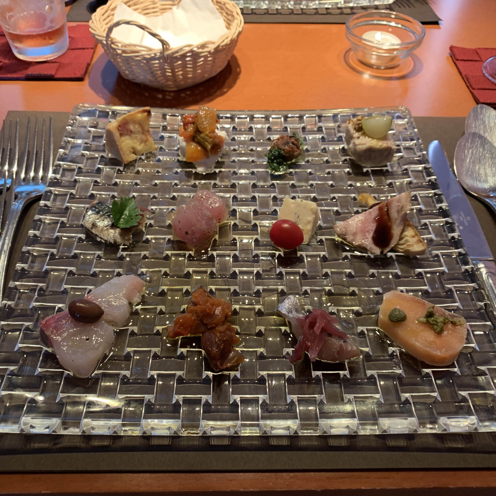

Kani City
HOME
KANI
GALLERY
CONTACT
KANI Innovations
可児市は、市政36周年日々様々な発展を遂げてきました。今年人口は10万人を突破、今後も発展を続けていくでしょう。

可児市の写真(60年代風)

可児市の写真(80年代風)

新たに建設された施設

今年改築した可児駅
Nature of KANI
可児市には世界有数のバラ園があります。約7,000品種61,000株のバラが植えられており、品種の数では世界一です。可児市は自然豊かな上、都会へのアクセスも比較的容易で、生活しやすい環境が整っています。
More

Life in KANI
もしあなたに刺激が必要なら可児に来るべきではないでしょう。立派なビルも、誇れる名所も、料理の名店もありません。
可児市で普通の生活を送りましょう。
 
^